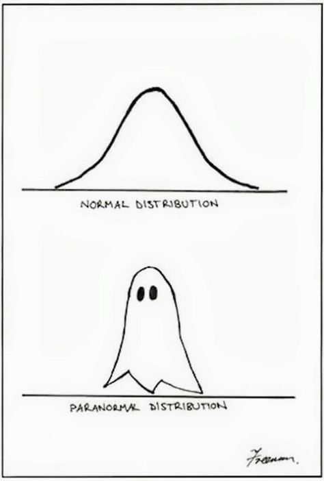
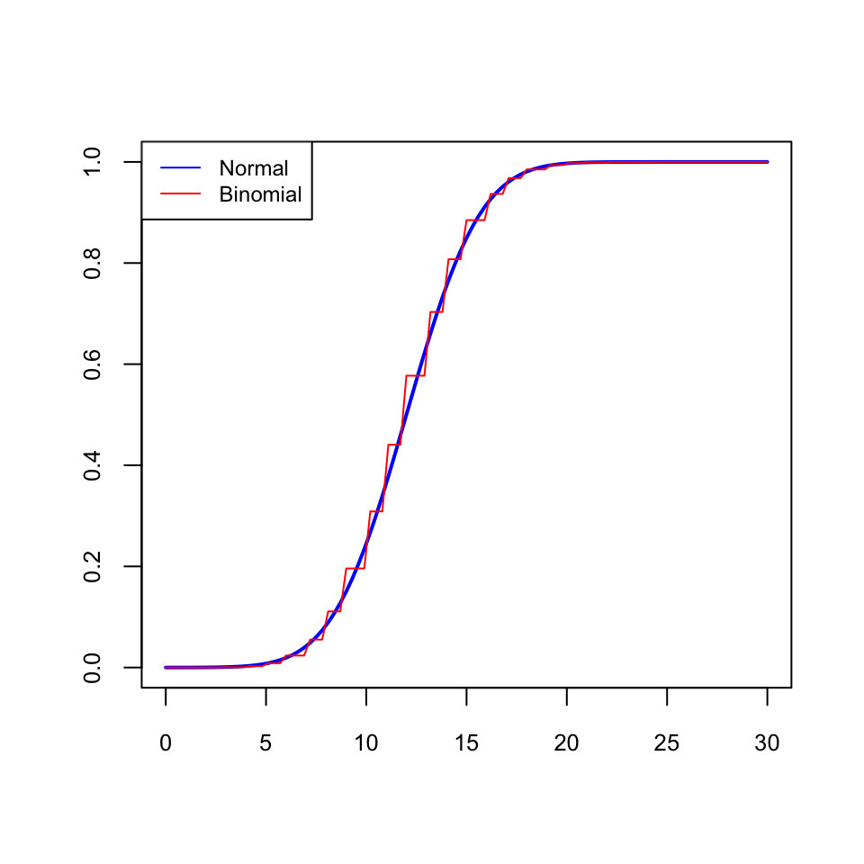
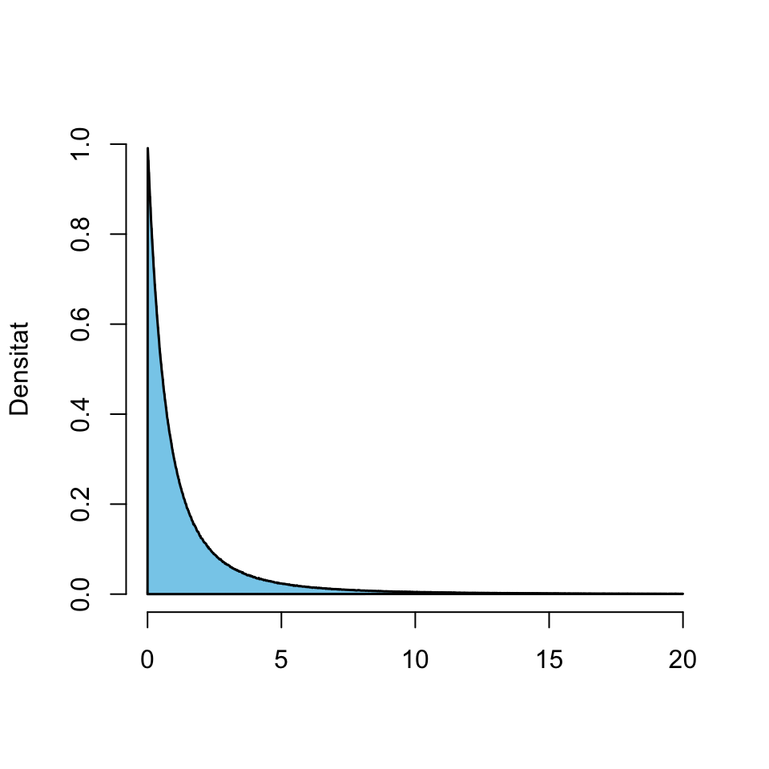
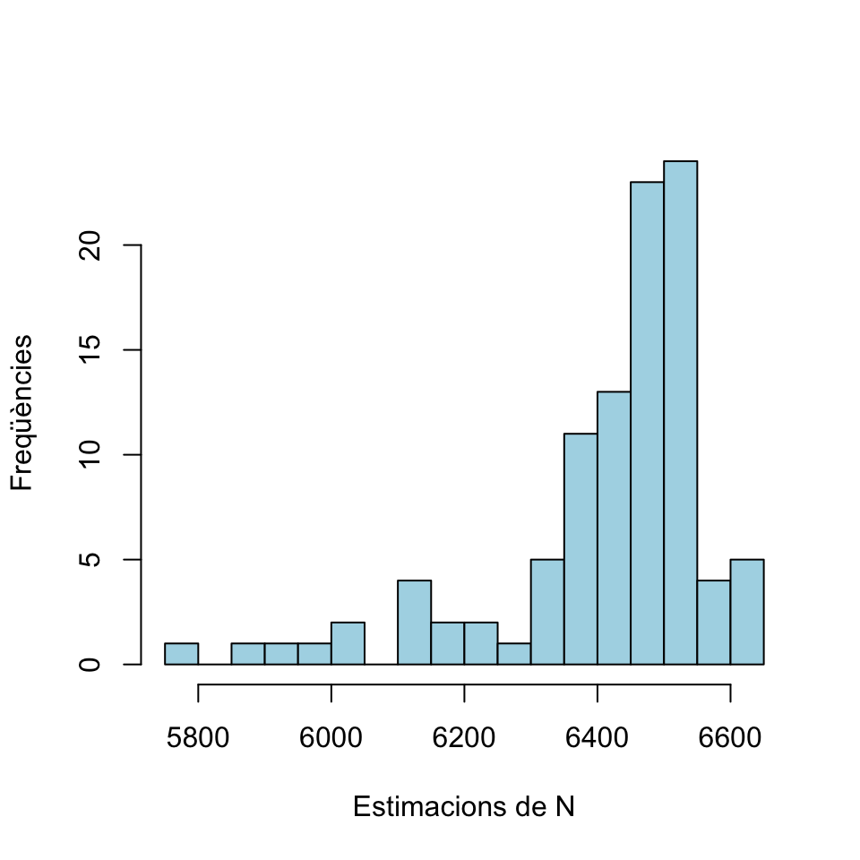
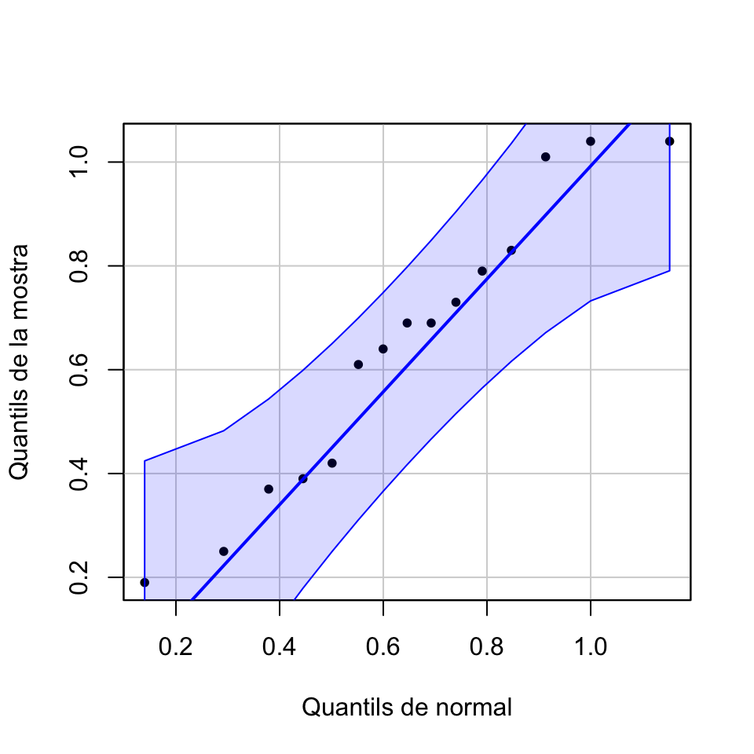
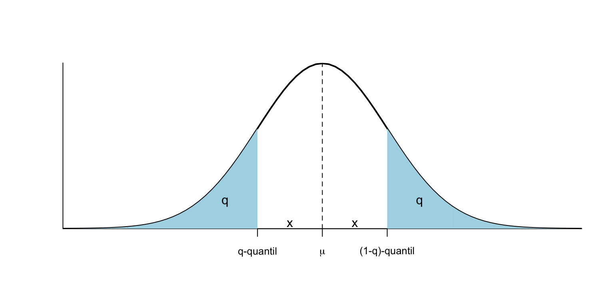
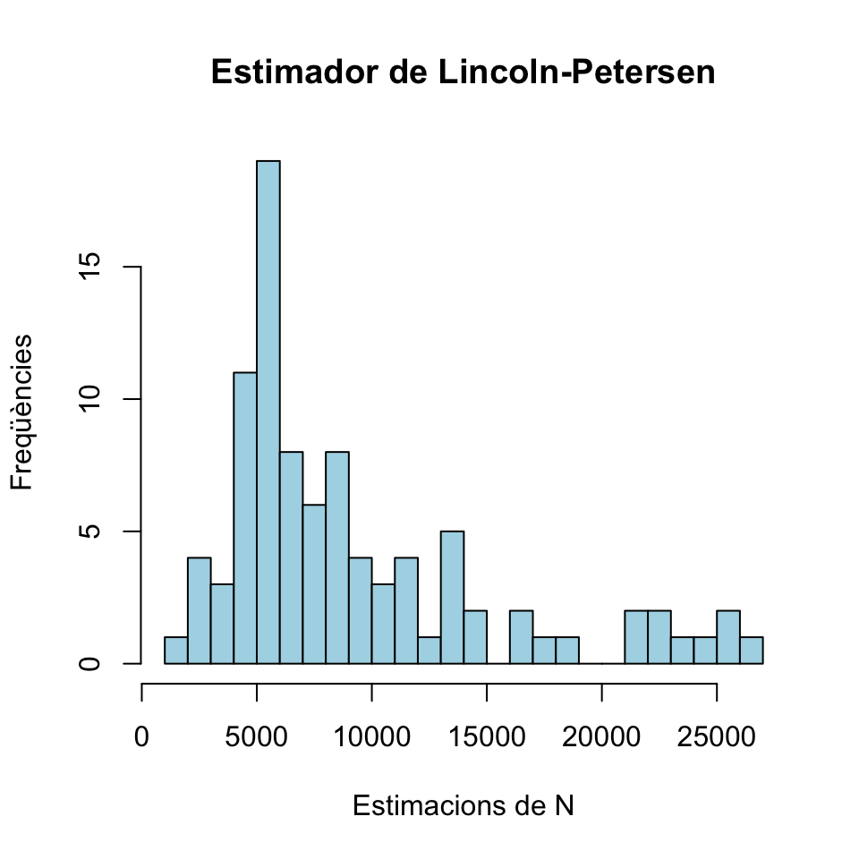
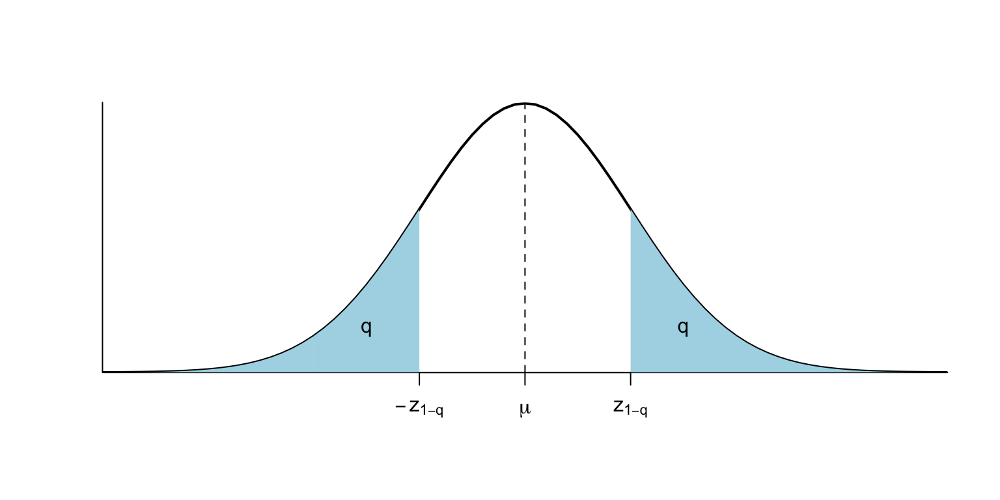
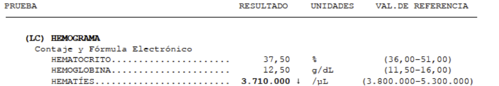

2.5 Variables aleatòries normals
Una variable aleatòria contínua \(X\) és normal (o té distribució normal) de paràmetres \(\mu\) i \(\sigma\) (per abreujar, \(N(\mu,\sigma)\)) quan la seva funció de densitat és \[ f_{X}(x)=\frac{1}{\sqrt{2\pi}\sigma} e^{{-(x-\mu)^2}/(2\sigma^{2})} \]
Naturalment, no us heu de saber aquesta fórmula.

Però sí que heu de saber que:
Una variable aleatòria normal \(X\) és contínua, i per tant \(P(X=x)=0\), \(P(X\leqslant x)=P(X<x)\) etc.
Si \(X\) és normal, la seva funció de distribució \(F_X\) és injectiva i creixent: si \(x<y\), \(F_X(x)<F_X(y)\).
Si \(X\) és \(N(\mu,\sigma)\), aleshores \(\mu_X=\mu\) i \(\sigma_X=\sigma\).
Una variable aleatòria normal diem que és estàndard (o típica) quan és \(N(0,1)\). Normalment indicarem les variables normals estàndard amb \(Z\). Observau, doncs, que si \(Z\) és normal estàndard, \(\mu_Z=0\) i \(\sigma_Z=1\).
La gràfica de la densitat d’una variable aleatòria normal és la famosa campana de Gauss:
Figura 2.6: Densitat d’una variable normal estàndard
La distribució normal és una distribució teòrica, no la trobareu exacta en la vida real. I malgrat el seu nom, no és més “normal” que altres distribucions contínues.

Però és molt important, pel fet que moltes distribucions de la vida real són aproximadament normals. El motiu és que:
Si una variable aleatòria consisteix a prendre un nombre molt gran \(n\) de mesures independents d’una o diverses variables aleatòries i sumar-les, aleshores té distribució aproximadament normal, encara que les variables aleatòries de partida no ho siguin.
Exemple 2.9 Una variable binomial \(B(n,p)\) s’obté prenent \(n\) mesures independents d’una variable Bernoulli \(Be(p)\) i sumant-les. Per tant, per la “regla” anterior, una \(B(n,p)\) hauria de ser aproximadament normal si \(n\) és gran. Doncs sí, si \(n\) és gran (posem a partir de 40, encara que si \(p\) és molt propera a 0 o 1, la mida de les mostres ha de ser més gran), una variable \(X\) binomial \(B(n,p)\) és aproximadament normal \(N(np,\sqrt{np(1-p)})\), on recordau que, si \(X\) és \(B(n,p)\), aleshores \(\mu_X=np\) i \(\sigma_X=\sqrt{np(1-p)}\). Aquest “aproximadament” significa que la densitat i la distribució de \(X\) són aproximadament les de la normal.
Per exemple, el gràfic següent compara les funcions de distribució d’una binomial \(B(40,0.3)\) i una normal \(N(40\cdot 0.3,\sqrt{40\cdot 0.3\cdot 0.7})\).

Exemple 2.10 Podem entendre que, amb una variable de Poisson, observam tots els punts d’un espai o tots els instants d’un període de temps i sumam tots els Èxits que hi trobam. Doncs, un altre cop, si \(X\) és una variable aleatòria de Poisson \(Po(\lambda)\) i \(\lambda\) és gran, aleshores \(X\) és aproximadament \(N(\lambda,\sqrt{\lambda})\).
Per exemple, el gràfic següent compara les funcions de distribució d’una Poisson \(Po(70)\) i una normal \(N(70,\sqrt{70})\).

Quan s’aproxima per mitjà d’una variable normal \(Y\) una variable discreta \(X\) que només pot prendre com a valors nombres naturals, com ara una binomial o una Poisson, és convenient aplicar l’anomenada correcció de continuïtat: per a cada \(n\in \mathbb{N}\), aproximar:
\(P(X\leqslant n)\) per mitjà de \(P(Y< n+1/2)\)
\(P(X=n)\) per mitjà de \(P(n-1/2< Y< n+1/2)\)
2.5.1 Amb R
Per calcular probabilitats d’una \(N(\mu,\sigma)\), cal calcular les integrals a mà.

O podeu emprar R, per a qui la normal és norm. Per tant, si \(X\sim N(\mu,\sigma)\):
dnorm(x,mu,sigma)dóna el valor de la densitat \(f_X(x)\)pnorm(x,mu,sigma)dóna el valor de la distribució \(F_X(x)=P(X\leqslant x)\)qnorm(q,mu,sigma)dóna el \(q\)-quantil de \(X\)rnorm(n,mu,sigma)dóna un vector de \(n\) nombres aleatoris generats amb aquesta distribució
Així, per exemple, si \(X\) és \(N(1,2)\)
- \(P(X\leqslant 1.5)\) és
pnorm(1.5,1,2)## [1] 0.5987063- El 0.4-quantil de \(X\), és a dir, el valor \(q\) tal que \(P(X\leqslant q)=0.4\) és
qnorm(0.4,1,2)## [1] 0.4933058- \(P(X=1.5)\) és
dnorm(1.5,1,2)## [1] 0.1933341dnorm(1.5,1,2) és el valor de la funció de densitat de \(X\) en 1.5, que no creiem que us interessi gaire.
Si la normal és estàndard, no fa falta entrar la \(\mu=0\) i la \(\sigma=1\) (són els valors per defecte d’aquests paràmetres per a norm). Així, si \(Z\) és \(N(0,1)\):
- \(P(Z\leqslant 1.5)\) és
pnorm(1.5)## [1] 0.9331928- El seu 0.95-quantil és
qnorm(0.95)## [1] 1.644854- Què val \(P(-1\leqslant Z\leqslant 1)\)? Com que \(P(-1\leqslant Z\leqslant 1)=P(Z\leqslant 1)-P(Z\leqslant -1)\), és
pnorm(1)-pnorm(-1)## [1] 0.6826895Exemple 2.11 A la secció anterior, us hem dit que una variable binomial \(B(n,p)\) amb \(n\) gran s’aproxima per mitjà d’una variable normal \(N(np,\sqrt{np(1-p)})\). Així, per exemple, una variable \(X\) binomial \(B(400,0.2)\) s’aproxima per mitjà d’una variable \(Y\) normal \(N(400\cdot 0.2,\sqrt{400\cdot 0.2\cdot 0.8})=N(80,8)\). Vegem amb alguns exemples que aquesta aproximació és millor aplicant-hi la correcció de continuïtat:
- \(F_X(70)=P(X\leqslant 70)\):
pbinom(70,400,0.2)## [1] 0.1163917- \(F_Y(70)=P(Y\leqslant 70)\):
pnorm(70,80,8)## [1] 0.1056498- La correcció de continuïtat ens diu que és millor aproximar \(P(X\leqslant 70)\) per mitjà de \(P(Y< 70+1/2)\):
pnorm(70.5,80,8)## [1] 0.1175152- \(f_X(70)=P(X=70)\):
dbinom(70,400,0.2) ## [1] 0.02338443- \(f_Y(70)\) (que no és \(P(Y=70)\)):
dnorm(70,80,8) ## [1] 0.02283114- La correcció de continuïtat ens diu que és millor aproximar \(P(X=70)\) per mitjà de \(P(70-1/2<Y< 70+1/2)\):
pnorm(70.5,80,8) -pnorm(69.5,80,8)## [1] 0.02283949Exemple 2.12 La pressió sistòlica, mesurada en mm Hg, es distribueix com una variable normal amb valor mitjà i desviació típica que depenen del sexe i l’edat. Per a la franja d’edat 16-24 anys, aquests valors (s’estima que) són:
- Per a homes, \(\mu=124\) i \(\sigma=13.7\)
- Per a dones, \(\mu=117\) i \(\sigma=13.7\)
El model d’hipertensió-hipotensió acceptat és el descrit en la Figura 2.7. Volem calcular els límits de cada classe per a cada sexe en aquest grup d’edat.
Figura 2.7: Model d’hipertensió-hipotensió.
Vegem:
- El límit superior del grup d’hipotensió serà el valor que deixa a l’esquerra un 5% de les tensions: el 0.05-quantil de la distribució.
- El límit superior del grup de risc d’hipotensió serà el valor que deixa a l’esquerra un 10% de les tensions: el 0.1-quantil de la distribució.
- El límit inferior del grup de risc d’hipertensió serà el valor que deixa a l’esquerra un 90% de les tensions: el 0.9-quantil de la distribució.
- El límit inferior del grup d’hipertensió serà el valor que deixa a l’esquerra un 95% de les tensions: el 0.95-quantil de la distribució.
En els homes, la tensió sistòlica és una variable aleatòria \(N(124,13.7)\). Aleshores, aquests quantils són:
- El 0.05-quantil:
round(qnorm(0.05,124,13.7),1)## [1] 101.5- El 0.1-quantil:
round(qnorm(0.1,124,13.7),1)## [1] 106.4- El 0.9-quantil:
round(qnorm(0.9,124,13.7),1)## [1] 141.6- El 0.95-quantil:
round(qnorm(0.95,124,13.7),1)## [1] 146.5En resum, per als homes de 16 a 24 anys tenim els límits de la Taula 2.1.
| Grup | Interval |
|---|---|
| Hipotens | <101.5 |
| Prehipotens | 101.5 a 106.4 |
| Normotens | 106.4 a 141.6 |
| Prehipertens | 141.6 a 146.5 |
| Hipertens | > 146.5 |
2.5.2 Propietats bàsiques
Ja hem explicat el significat dels paràmetres \(\mu\) i \(\sigma\), però el tornam a repetir:
Una de les propietats clau de la distribució normal és la seva simetria:

Per tant, el valor al voltant del qual és més probable que una variable normal \(N(\mu,\sigma)\) caigui és justament el seu valor esperat \(\mu\).
En particular, si \(Z\) és \(N(0,1)\), llavors \(f_Z\) és simètrica al voltant de 0, és a dir, \(f_{Z}(-x)=f_{Z}(x)\), i la moda de \(Z\) és \(x=0\).
Recordau que la funció de distribució d’una variable aleatòria contínua \(X\), \[ F_X(x)=P(X\leqslant x) \] és l’àrea compresa entre la densitat \(y=f_X(x)\) i l’eix d’abscisses a l’esquerra de \(x\).

Llavors, la simetria de \(f_X\) fa que, per a tot \(x\geqslant 0\), les àrees a l’esquerra de \(\mu-x\) i a la dreta de \(\mu+x\) siguin iguals.

És a dir, \[ P(X\leqslant \mu-x)=P(X\geqslant \mu+x)=1-P(X\leqslant \mu+x) \]
En particular (prenent \(x=0\)) \[ P(X\leqslant \mu)=1-P(X\leqslant \mu)\Rightarrow P(X\leqslant \mu)=0.5 \] i per tant, \(\mu\) és també la mediana de \(X\).
En el cas concret de la normal estàndard \(Z\), per a qualsevol \(z\geqslant 0\) es té que les àrees a l’esquerra de \(-z\) i a la dreta de \(z\) són iguals \[ P(Z\leqslant -z)=P(Z\geqslant z)=1-P(Z\leqslant z) \] i la mediana de \(Z\) és 0.
Ara que sabem més coses de la normal, a l’Exemple 2.12 ens haguéssim pogut estalviar la meitat de la feina. Diguem \(X\) a la variable aleatòria la pressió arterial, en mm Hg, d’un home d’entre 16 i 24 anys. Ens diuen que \(X\) és \(N(124,13.7)\).
Per la simetria de \(X\) al voltant de \(\mu=124\), si escrivim el 0.05-quantil com \(124-x\), aleshores \(P(X\geqslant 124+x)=P(X\leqslant 124-x)=0.05\) i per tant \(P(X\leqslant 124+x)=1-P(X\geqslant 124+x)=0.95\), és a dir, \(124+x\) serà el 0.95-quantil de \(X\).
El 0.05-quantil ha estat 101.5. Escrivint \(101.5=124-x\), obtenim \(x=22.5\). Per tant, el 0.95-quantil ha de ser \(124+22.5=146.5\).
El mateix passa amb el 0.9-quantil i el 0.1-quantil, raonau-ho i comprovau-ho.

Si \(\mu\) creix, desplaça a la dreta l’eix vertical de simetria de la densitat, i amb ell tota la corba.
Si \(\sigma\) creix, la corba s’aplana: en augmentar la desviació típica, els valors són més variats i augmenta la probabilitat que prenguin valors més llunyans de \(\mu\).

El gràfic següent mostra l’efecte combinat:
Indicarem amb \(z_q\) el \(q\)-quantil d’una variable normal estàndard \(Z\). És a dir, \(z_q\) és el valor tal que \(P(Z\leqslant z_q)=q\).
A banda del fet que \(z_{0.5}=0\) (la mediana de \(Z\) és 0), hi ha dos quantils més de la normal estàndard \(Z\) que hauríeu de recordar:
\(z_{0.95}=1.64\); és a dir, \(P(Z\leqslant 1.64)=0.95\) i per tant \(P(Z\leqslant -1.64)=P(Z\geqslant 1.64)=0.05\) (és a dir, \(z_{0.05}=-1.64\)) i \[ P(-1.64\leqslant Z\leqslant 1.64)=0.9. \]
\(z_{0.975}=1.96\); és a dir, \(P(Z\leqslant 1.96)=0.975\) i per tant \(P(Z\leqslant -1.96)=P(Z\geqslant 1.96)=0.025\) (és a dir, \(z_{0.025}=-1.96\)) i \[ P(-1.96\leqslant Z\leqslant 1.96)=0.95. \]

Una de les propietats de la distribució normal que ens faciliten molt la vida és que tota combinació lineal de variables aleatòries normals independents és normal. En concret, tenim els dos resultats següents:
Teorema 2.5 Sigui \(X\) una variable \(N(\mu,\sigma)\).
Per a tots \(a,b\in \mathbb{R}\), \(aX+b\) és normal \(N(a\mu+b,|a|\cdot\sigma)\).
En particular, la tipificada de \(X\) \[ Z=\dfrac{X-\mu}{\sigma} \] és normal estàndard.
Més en general:
Les probabilitats de la normal tipificada determinen les de la normal original, perquè si \(X\) és \(N(\mu,\sigma)\): \[ \begin{array}{rl} P(a\leqslant X\leqslant b)\!\!\!\!\! & \displaystyle =P\Big( \frac{a-\mu}{\sigma}\leqslant \frac{X-\mu}{\sigma}\leqslant \frac{b-\mu}{\sigma}\Big)\\ & \displaystyle =P\Big(\frac{a-\mu}{\sigma}\leqslant Z\leqslant \frac{b-\mu}{\sigma}\Big) \end{array} \] Això serveix per deduir fórmules o resoldre problemes com el següent, i els vostres pares ho empraven per calcular probabilitats de normals (amb taules de probabilitats de la normal estàndard), però ara és més còmode usar una apli.
Diguem \(X\) a la variable “Prenc una nord americana de 20 anys i mesur la seva alçada en m”. Sabem que és \(N(\mu,\sigma)\), però desconeixem \(\mu\) i \(\sigma\).
Ens diuen que \[ P(X< 1.55)=0.1,\ P(X< 1.60)=0.305 \] i amb això volem calcular la \(h\) tal que \(P(X\leqslant h)=0.95\), és a dir, el 0.95-quantil de \(X\). El que farem serà, tipificant la \(X\), traduir la informació que ens han donat a quantils d’una normal estàndard \(Z\): \[ \begin{array}{l} \displaystyle 0.1=P(X< 1.55)=P\Big(\frac{X-\mu}{\sigma}<\frac{1.55-\mu}{\sigma}\Big)=P\Big(Z<\frac{1.55-\mu}{\sigma}\Big)\\ \displaystyle \qquad \Longrightarrow \frac{1.55-\mu}{\sigma}=z_{0.1}\\ \displaystyle 0.305=P(X< 1.6)=P\Big(\frac{X-\mu}{\sigma}<\frac{1.6-\mu}{\sigma}\Big)=P\Big(Z<\frac{1.6-\mu}{\sigma}\Big)\\ \displaystyle \qquad \Longrightarrow \frac{1.6-\mu}{\sigma}=z_{0.305} \end{array} \] Ara podem calcular aquests dos quantils \(z_{0.1}\) i \(z_{0.305}\):
qnorm(0.1)## [1] -1.281552qnorm(0.305)## [1] -0.5100735Obtenim d’aquesta manera el sistema d’equacions lineals \[ \left. \begin{array}{ll} 1.55-\mu=-1.282\sigma\\ 1.6-\mu=-0.51\sigma \end{array}\right\} \] El resolem i obtenim \[ \mu=1.633,\ \sigma=0.065 \] I ara ja podem calcular la \(h\) com el 0.95-quantil d’una \(N(1.633,0.065)\):
qnorm(0.95,1.633,0.065)## [1] 1.739915Concloem que un 95% de les nord americanes de 20 anys fan manco de 1.74 m.
2.5.3 Intervals de referència
Un interval de referència del Q% per a una variable aleatòria \(X\) és un interval \([a,b]\) tal que \[ P(a\leqslant X\leqslant b)=\frac{Q}{100}. \] És a dir, un interval de referència del Q% per a \(X\) és un interval que conté els valors de \(X\) del Q% dels subjectes de la població.
Per exemple, hem vist en la secció anterior que [-1.64,1.64] i [-1.96,1.96] són intervals de referència del 90% i del 95%, respectivament, per a una variable normal estàndard \(Z\).
Els més comuns són els intervals de referència del 95%, que satisfan que \[ P(a\leqslant X\leqslant b)=0.95 \] i són els, que per exemple, us donen com a valors de referència en les analítiques:

Quan \(X\) és \(N(\mu,\sigma)\), aquests intervals de referència es prenen sempre centrats en la mitjana \(\mu\), és a dir, de la forma \[ [\mu-\text{alguna cosa},\mu+\text{aquesta mateixa cosa}]. \] Es calculen amb el resultat següent:
Teorema 2.7 Si \(X\) és \(N(\mu,\sigma)\), un interval de referència del Q% per a \(X\) és \[ [\mu- z_{(1+q)/2}\cdot \sigma, \mu+ z_{(1+q)/2}\cdot \sigma] \] on \(q=Q/100\) i \(z_{(1+q)/2}\) és el \((1+q)/2\)-quantil de la normal estàndard \(Z\). Normalment escriurem aquest interval \[ \mu\pm z_{(1+q)/2}\cdot \sigma. \]
La demostració és un exemple d’ús de la tipificació de la normal: \[ \begin{array}{l} P(\mu-x\leqslant X\leqslant \mu+x)=q\\ \qquad \Longleftrightarrow \displaystyle P\Big(\frac{\mu-x-\mu}{\sigma}\leqslant \frac{X-\mu}{\sigma}\leqslant \frac{\mu+x-\mu}{\sigma}\Big)=q\\ \qquad \Longleftrightarrow \displaystyle P(-x/{\sigma}\leqslant Z\leqslant {x}/{\sigma})=q\\ \qquad \Longleftrightarrow \displaystyle P(Z\leqslant {x}/{\sigma})-P(Z\leqslant -{x}/{\sigma})=q\\ \qquad \Longleftrightarrow \displaystyle P(Z\leqslant {x}/{\sigma})-(1-P(Z\leqslant {x}/{\sigma}))=q\\ \qquad \text{(per la simetria de $f_Z$ al voltant de 0)}\\ \qquad \Longleftrightarrow \displaystyle 2P(Z\leqslant {x}/{\sigma})=q+1\\ \qquad \Longleftrightarrow P(Z\leqslant {x}/{\sigma})=(1+q)/2\\ \qquad \Longleftrightarrow x/\sigma= z_{(1+q)/2}\\ \qquad \Longleftrightarrow x=z_{(1+q)/2}\cdot \sigma \end{array} \]
Si \(q=0.95\), llavors \((1+q)/2=0.975\) i \(z_{0.975}=1.96\). Per tant, l’interval de referència del 95% per a una variable \(X\) normal \(N(\mu,\sigma)\) és \[ \mu\pm 1.96\sigma. \] I com que aquest 1.96 sovint s’aproxima per 2, l’interval de referència del 95% d’una \(N(\mu,\sigma)\) se sol simplificar a \[ \mu\pm 2\sigma. \] Això diu, bàsicament, que
Si una població segueix una distribució normal \(N(\mu,\sigma)\), un 95% dels seus individus tenen el seu valor de \(X\) a distància com a màxim \(2\sigma\) (“a dues sigmes”) de \(\mu\).
Exemple 2.14 Segons l’OMS, les altures (en cm) de les dones europees de 18 anys segueixen una llei \(N(163.1,18.53)\). Quin és l’interval d’altures centrat en la mitjana que conté a la meitat de les europees de 18 anys?
Fixau-vos que, si diem \(X\) a la variable aleatòria “Altura d’una dona europea de 18 anys en cm”, el que volem saber és l’interval centrat en la seva mitjana, 163.1, tal que la probabilitat que l’alçada d’una europea de 18 anys triada a l’atzar pertanyi a aquest interval sigui 0.5. És a dir, l’interval de referència del 50% per a \(X\).
Ens diuen que \(X\) és \(N(163.1,18.53)\). Si \(q=0.5\), llavors \((1+q)/2=0.75\). El 0.75-quantil \(z_{0.75}\) d’una normal estàndard és
qnorm(0.75)## [1] 0.6744898Per tant, l’interval de referència demanat és \(163.1\pm 0.6745\cdot 18.53\), és a dir, arrodonint a mm, \([150.6, 175.6]\). Això ens diu que la meitat de les dones europees de 18 anys fan entre 150.6 i 175.6 cm.
El z-score d’un valor \(x_0\in \mathbb{R}\) respecte d’una distribució \(N(\mu,\sigma)\) és \[ \frac{x_0-\mu}{\sigma} \]
És a dir, el z-score de \(x_0\) és el resultat de “tipificar” \(x_0\) en el sentit del Teorema 2.5.2.
Si la variable poblacional és normal, com més gran és el valor absolut del z-score de \(x_0\), més “rar” és \(x_0\); el signe ens diu si és més gran o més petit que el valor esperat \(\mu\).
Exemple 2.15 Recordau que, segons l’OMS, les altures de les dones europees de 18 anys segueixen una llei \(N(163.1,18.53)\). Quin seria el z-score d’una jugadora de bàsquet de 18 anys que fes 191 cm?
Seria \[ \frac{191-163.1}{18.53}=1.5 \]
Això se sol llegir dient que l’alçada d’aquesta jugadora està 1.5 sigmes per sobre de l’alçada mitjana.
2.5.4 Variables log-normals
Direm que \(X\) és una variable log-normal quan el seu logaritme neperià \(\ln(X)\) és una variable normal. O, si ho preferiu, quan és una variable de la forma \(e^Y\) amb \(Y\) normal. Moltes concentracions d’enzims o anticossos tenen distribucions aproximadament log-normals.
La densitat d’una variable log-normal és asimètrica, amb una cua a la dreta, com mostra la Figura 2.8.
Figura 2.8: Densitat de \(e^Z\) amb \(Z\) normal estàndard.
Recíprocament, molt sovint una variable la densitat de la qual mostri una pujada ràpida des del 0 a la moda i després una cua a la dreta, satisfà que el seu logaritme segueix una distribució aproximadament normal. Això ens serà útil més endavant.
Amb R, la distribució log-normal és lnorm. Els paràmetres que s’empren per descriure-la són els de la variable normal definida pel seu logaritme:
La mitjana en escala logarítmica de \(X\): \(\mu_{\ln(X)}\)
La desviació típica en escala logarítmica de \(X\): \(\sigma_{\ln(X)}\)
Exemple 2.16 La dosi letal \(Y\) de la digitalina en ratolins (és la dir, la variable aleatòria que dóna la quantitat de digitalina que cal administrar a un ratolí per matar-lo) té distribució log-normal. Se sap que una injecció de 1cc de digitalina mata un 10% dels ratolins (és a dir, que la probabilitat que una dosi de 1cc o manco mati un ratolí és de 0.1: \(P(Y\leqslant 1)=0.1\)) i que una injecció de 2cc mata un 75% dels ratolins (\(P(Y\leqslant 2)=0.75\)).
Volem saber la dosi de digitalina (en cc) que és letal per al 95% dels ratolins. Aquest tipus d’experiments és la base de l’anomenat mètode probit per determinar la letalitat de substàncies.
Així doncs, volem calcular el valor \(a\) tal que \(P(Y\leqslant a)=0.95\), que no és res més que el 0.95-quantil de \(Y\).
Com que el logaritme és injectiu, \(P(Y\leqslant x)=P(\ln(Y)\leqslant \ln(x))\). Per tant el pla és trobar el 0.95-quantil de \(\ln(Y)\), diguem-li \(b\), i aleshores tendrem \(a=e^b\).
Per simplificar, diguem \(X\) a \(\ln(Y)\). Sabem que \(X\) és normal, per tant només ens cal saber la seva \(\mu\) i la seva \(\sigma\) i podrem calcular el seu 0.95-quantil.
El que sabem és que \[ \begin{array}{l} 0.1=P(Y\leqslant 1)=P(X\leqslant \ln(1))=P(X\leqslant 0)\\ 0.75=P(Y\leqslant 2)=P(X\leqslant \ln(2)) \end{array} \] Com podem determinar la \(\mu\) i la \(\sigma\) de \(X\) a partir d’aquests dos valors? Ja ens hem trobat en una situació semblant a l’Exemple 2.13. El que fem és traduir aquesta informació en termes de quantils de la normal estàndard.
\[ \begin{array}{l} \displaystyle 0.1=P(X\leqslant 0)=P\Big(\frac{X-\mu}{\sigma}\leqslant \frac{-\mu}{\sigma}\Big)=P\Big(Z\leqslant -\frac{\mu}{\sigma}\Big)\\ \displaystyle\qquad \Longrightarrow -\frac{\mu}{\sigma}=z_{0.1}=\texttt{qnorm(0.1)}=-1.2816\\ \displaystyle 0.75=P(X\leqslant \ln(2))=P\Big(\frac{X-\mu}{\sigma}\leqslant \frac{\ln(2)-\mu}{\sigma}\Big)=P\Big(Z\leqslant \frac{\ln(2)-\mu}{\sigma}\Big)\\ \displaystyle\qquad \Longrightarrow \frac{\ln(2)-\mu}{\sigma}=z_{0.75}=\texttt{qnorm(0.75)}=0.6745 \end{array} \] Obtenim el sistema d’equacions \[ \left. \begin{array}{l} \mu=1.2816\sigma\\ \ln(2)-\mu=0.6745\sigma \end{array} \right\} \] i resolent-lo obtenim \[ \mu=0.4541,\quad \sigma=0.3544 \]
Ara podem calcular el 0.95-quantil de \(X\):
qnorm(0.95,0.4541,0.3544)## [1] 1.037036Per tant \(P(X\leqslant 1.037)=0.95\). D’aquí deduïm que \(P(Y\leqslant e^{1.037})=0.95\). Com que \(e^{1.037}=2.82\), concloem que 2.82 cc de digitalina són suficients per matar el 95% dels ratolins.
Ho podem comprovar (amb R, no escabetxant ratolins, malpensats!):
plnorm(2.82,0.4541,0.3544)## [1] 0.9499129